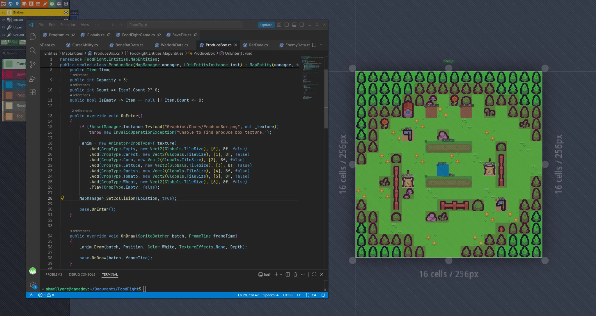
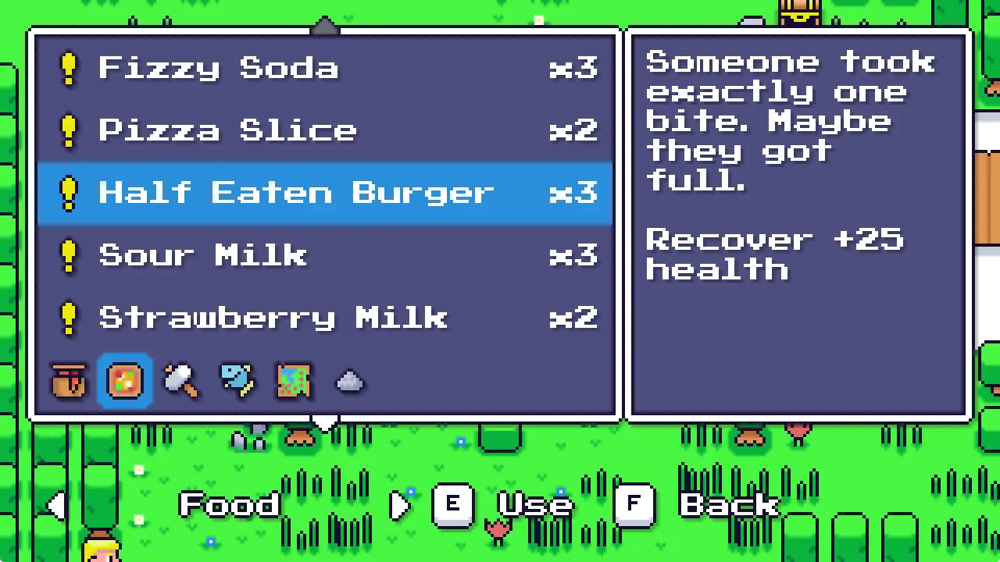
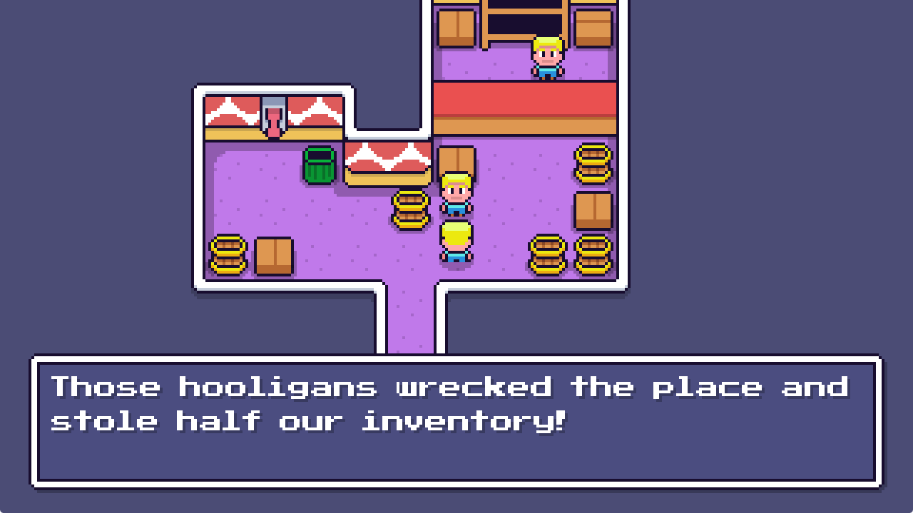

Useful defaults
Start with rendering, input, audio, assets, saving, tooling, and common game systems already available.
An extensible .NET game framework built to give you useful defaults without locking you into them.
What is VOID?
VOID is a lightweight, modular 2D game framework for developers who want a capable starting point without surrendering control of their architecture. Use the systems VOID provides, extend them when you need more, or replace them when your project needs something different.
Start with rendering, input, audio, assets, saving, tooling, and common game systems already available.
Major systems expose clear extension points instead of assuming one implementation is right for every project.
VOID provides the foundation. It does not dictate how your entire game has to be structured.
Core systems
Practical framework-level systems without turning VOID into a giant all-in-one engine.
Sprite and primitive batching, texture atlases, shaders, render targets, post-processing, and a renderer-neutral API.
SDL3 windowing, displays, keyboard, mouse, gamepads, and fullscreen handling.
Virtual mounts, custom asset types, pack loading, project templates, and encrypted asset packing tools.
OpenAL playback, sound pooling, priority-based voice stealing, and category volumes.
Coroutines, tweens, pathfinding, encrypted saves, logging, math helpers, and LDtk integration.
Custom renderers, asset sources, atlas packers, logging sinks, batchers, render targets, cameras, and more.
Design philosophy
A foundation,Frameworks should remove work, not remove choices. VOID is designed around transparency, replaceable systems, and sensible defaults so you can start quickly without discovering later that the framework owns your architecture.
Use what works. Replace what doesn't.
Read the Design PhilosophyRendering
VOID ships with a built-in Silk.NET.OpenGL renderer, but OpenGL is a backend, not the identity of the engine.

Real projects
Real VOID project screenshots showing gameplay, in-game UI, and framework integration with LDtk.



Start simple
You do not need to understand VOID's renderer architecture to make your first game. Start with the official project template and use the built-in systems. The deeper architecture is there when you need it.
dotnet new install Void.Templates
dotnet new voidgame -n MyGame
cd MyGame
dotnet runReady when you are
Start with the official template and get a correctly configured VOID project from the beginning.